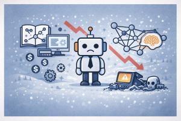

%%{init: {'theme': 'base', 'themeVariables': {'fontSize': '14px'}}}%%
timeline
title 1980s AI Milestones — Expert Systems, Neural Nets & The Second AI Winter
1980 : XCON/R1 deployed at DEC — saves millions
1981 : Japan launches Fifth Generation Computer Systems project
1982 : Expert systems industry begins rapid growth
1983 : DARPA launches Strategic Computing Initiative
: UK launches Alvey Programme (£350M)
1985 : Lisp machine market peaks — Symbolics, LMI, TI
1986 : Rumelhart, Hinton & Williams publish backpropagation in Nature
: Expert systems industry worth over $1 billion
1987 : Lisp machine market collapses — desktop PCs take over
: Expert systems limitations become apparent
: Second AI Winter begins
1988 : Judea Pearl publishes "Probabilistic Reasoning in Intelligent Systems"
: Ross Quinlan develops C4.5 decision trees
1989 : Christopher Watkins formalizes Q-learning
: Yann LeCun demonstrates ConvNet for handwritten digits
1980s AI Milestones
Expert Systems, Neural Networks & The Second AI Winter — how AI became a billion-dollar industry, then collapsed under its own hype
Keywords
AI history, expert systems, XCON, R1, Fifth Generation Computer Systems, backpropagation, neural networks, Lisp machines, second AI winter, Rumelhart, Hinton, Williams, connectionism, Yann LeCun, ConvNet, Bayesian networks, Judea Pearl, Q-learning, Strategic Computing Initiative, Alvey Programme, knowledge engineering, 1980s AI

Introduction
The 1980s were the most dramatic decade in AI history — a rollercoaster of explosive commercial success followed by devastating collapse. After the First AI Winter of the 1970s, a remarkable confluence of forces brought AI roaring back to life. Japan’s audacious Fifth Generation Computer Systems project triggered a global arms race, expert systems became a multi-billion-dollar industry, and specialized Lisp machines promised to put AI on every engineer’s desk.
By mid-decade, expert systems — programs that encoded human knowledge as rules to solve specialized problems — had become the dominant paradigm. DEC’s XCON/R1 system was saving the company over $40 million a year. Companies like Symbolics, IntelliCorp, and Teknowledge were riding a wave of corporate investment. The AI industry, which barely existed in 1980, was worth an estimated $2 billion by 1988.
But the boom carried the seeds of its own destruction. Expert systems turned out to be brittle, expensive to maintain, and unable to handle novel situations. Lisp machines — specialized hardware costing tens of thousands of dollars — were suddenly made obsolete by cheap, powerful desktop PCs from Apple and IBM. The Japanese Fifth Generation project, despite enormous investment, failed to deliver on its promises. By 1987, the Second AI Winter had begun, and the word “AI” itself became toxic in corporate boardrooms.
Yet the 1980s also produced breakthroughs that would ultimately reshape the field. The backpropagation algorithm revived neural networks from their 15-year exile. Yann LeCun demonstrated convolutional networks for handwritten digit recognition — the ancestor of modern deep learning. Judea Pearl introduced Bayesian networks for probabilistic reasoning. Christopher Watkins formalized Q-learning, laying the cornerstone of reinforcement learning. And Ross Quinlan’s C4.5 decision tree became one of the most influential algorithms in machine learning.
This article traces the key milestones of the 1980s — from the expert systems gold rush to the neural network renaissance — and examines how a decade of extremes produced both AI’s greatest commercial failure and the ideas that would eventually power its greatest triumph.
Timeline of Key Milestones
Japan’s Fifth Generation Computer Systems Project (1982)
In 1982, Japan’s Ministry of International Trade and Industry (MITI) launched the most ambitious government-funded AI project the world had ever seen: the Fifth Generation Computer Systems (FGCS) project. The goal was nothing less than to leapfrog Western computing — building machines capable of advanced reasoning, natural language understanding, and even intelligent conversation.
The project was headquartered at the newly established Institute for New Generation Computer Technology (ICOT) in Tokyo, funded through joint investment with major Japanese computer companies. MITI planned a 10-year effort: three years for initial R&D, four years for subsystem development, and a final three years to build a working prototype. The total budget was approximately ¥57 billion (roughly $320 million at the time, equivalent to $850 million in 2024 dollars).
The FGCS project chose logic programming — specifically Prolog and its concurrent variants — as its foundation, and aimed to build massively parallel inference machines capable of 100 million to 1 billion logical inferences per second (LIPS). At the time, typical workstations could manage about 100,000 LIPS.
| Aspect | Details |
|---|---|
| Launched | 1982 |
| Duration | 10 years (1982–1992) |
| Sponsor | Japan’s MITI (Ministry of International Trade and Industry) |
| Headquarters | ICOT (Institute for New Generation Computer Technology), Tokyo |
| Budget | ~¥57 billion (~$320M; ~$850M in 2024 dollars) |
| Technical foundation | Logic programming (Prolog, Concurrent Prolog, KL1) |
| Performance target | 100M–1G LIPS (Logical Inferences Per Second) |
| Outcome | Produced working prototypes but no commercial success |
“As part of Japan’s effort to become a leader in the computer industry, ICOT has launched a revolutionary ten-year plan for the development of large computer systems applicable to knowledge information processing.” — Ehud Shapiro, 1983
The project sent shockwaves through the Western computing establishment. If Japan succeeded, it would dominate the future of computing just as it had dominated consumer electronics and automotive manufacturing. The response was immediate: the US, UK, and Europe all launched counter-initiatives — triggering a global AI arms race.
Ultimately, the FGCS project produced five working Parallel Inference Machines and contributed significantly to concurrent logic programming research. But the specialized hardware was surpassed by cheaper, general-purpose workstations from Sun Microsystems and Intel. The project failed to achieve its commercial objectives — a fate it shared with the Lisp machine companies and the entire expert systems industry.
The Arms Race: Strategic Computing Initiative & Alvey Programme (1983)
Japan’s Fifth Generation announcement triggered panic in Western governments. Within two years, both the United States and the United Kingdom launched major counter-initiatives.
DARPA’s Strategic Computing Initiative (1983)
In 1983, the Defense Advanced Research Projects Agency (DARPA) launched the Strategic Computing Initiative (SCI) — the most ambitious and expensive AI program in American history up to that point. The SCI represented a dramatic reversal: just a decade earlier, DARPA had been slashing AI funding during the First AI Winter.
The SCI aimed to develop AI-powered military applications across three domains: autonomous land vehicles (self-driving military trucks), pilot’s associate (AI copilot for fighter aircraft), and battle management (AI for naval fleet command). DARPA invested approximately $1 billion over the life of the program.
The UK Alvey Programme (1983)
The United Kingdom, which had almost completely dismantled its AI research infrastructure after the 1973 Lighthill Report, responded with the Alvey Programme — a £350 million joint government-industry initiative to revive British competitiveness in information technology, including AI.
The Alvey Programme focused on four areas: intelligent knowledge-based systems (IKBS), software engineering, VLSI (very-large-scale integration), and man-machine interfaces. It represented a dramatic reversal of the Lighthill-era skepticism.
| Initiative | Country | Year | Investment | Focus |
|---|---|---|---|---|
| Fifth Generation (FGCS) | Japan | 1982 | ~$320M (¥57B) | Logic programming, parallel inference |
| Strategic Computing Initiative | US (DARPA) | 1983 | ~$1 billion | Autonomous vehicles, AI copilot, battle management |
| Alvey Programme | UK | 1983 | £350 million | IKBS, software engineering, VLSI |
| ESPRIT | Europe (EU) | 1983 | Multi-billion ECU | IT research including AI |
graph TD
A["Japan's Fifth Generation<br/>Project (1982)"] --> B["Global Panic:<br/>'The Japanese are coming!'"]
B --> C["US: DARPA Strategic<br/>Computing Initiative<br/>~$1 billion"]
B --> D["UK: Alvey Programme<br/>£350 million"]
B --> E["EU: ESPRIT<br/>Multi-billion ECU"]
C --> F["Autonomous vehicles,<br/>AI copilot, battle management"]
D --> G["IKBS, software engineering,<br/>VLSI, HCI"]
A --> H["~$320M over 10 years<br/>Logic programming + parallel hardware"]
style A fill:#e74c3c,color:#fff,stroke:#333
style B fill:#f39c12,color:#fff,stroke:#333
style C fill:#3498db,color:#fff,stroke:#333
style D fill:#27ae60,color:#fff,stroke:#333
style E fill:#8e44ad,color:#fff,stroke:#333
style F fill:#2980b9,color:#fff,stroke:#333
style G fill:#1e8449,color:#fff,stroke:#333
style H fill:#c0392b,color:#fff,stroke:#333
The arms race dynamic was reminiscent of the Space Race — and equally driven by national prestige as much as technological necessity. But unlike the Moon landing, none of the 1980s AI mega-projects achieved their stated goals. By the late 1980s, all three had fallen short of expectations, contributing to the disillusionment of the Second AI Winter.
Expert Systems Boom: XCON/R1 and the Knowledge Industry (1980–1986)
The expert systems boom was the defining commercial phenomenon of 1980s AI. What began as a narrow academic research program in the 1970s — with systems like DENDRAL and MYCIN — exploded into a multi-billion-dollar industry.
XCON/R1: The System That Started the Boom
The catalyst was XCON (originally called R1), an expert system created by John McDermott at Carnegie Mellon University in 1978 for Digital Equipment Corporation (DEC). XCON’s task was to configure VAX computer orders — selecting the right components, cables, software, and peripherals for each customer’s system.
Before XCON, this configuration process was done by human technicians who frequently made errors — shipping systems with missing cables, wrong drivers, or incompatible components. The mistakes caused expensive delays, customer dissatisfaction, and legal disputes.
XCON went into production use in 1980 at DEC’s Salem, New Hampshire plant. By 1986, it had processed 80,000 orders with 95–98% accuracy and had grown to approximately 2,500 rules. DEC estimated the system was saving the company $25–40 million per year — and some estimates ran even higher.
| Aspect | Details |
|---|---|
| System | XCON (eXpert CONfigurer), originally R1 |
| Creator | John McDermott, Carnegie Mellon University |
| For | Digital Equipment Corporation (DEC) |
| Language | OPS5 (production rule system) |
| Task | Configure VAX computer system orders |
| Deployed | 1980 (Salem, NH plant) |
| Scale | ~2,500 rules; processed 80,000 orders by 1986 |
| Accuracy | 95–98% |
| Savings | Estimated $25–40M per year |
“Four years ago I couldn’t even say ‘knowledge engineer’, now I are one.” — John McDermott (footnote in his 1980 paper on R1)
The Expert Systems Gold Rush
XCON’s success triggered an industry-wide gold rush. If one expert system could save DEC $40 million a year, surely every company needed one. The result was an explosion of expert systems startups and corporate AI labs:
- IntelliCorp — one of the first AI companies, selling knowledge engineering tools
- Teknowledge — founded by Stanford AI researchers, offered expert system consulting
- Applied Intelligence Systems — expert systems for financial services
- Carnegie Group — expert systems for manufacturing and engineering
By 1985, the expert systems market had become a multi-billion-dollar industry. DuPont alone deployed over 100 expert systems across its operations. Nearly every Fortune 500 company either built or purchased expert systems. The AI industry, which was virtually non-existent in 1980, was estimated to be worth over $2 billion by 1988.
| Year | Industry Size | Key Development |
|---|---|---|
| 1980 | Nascent | XCON deployed at DEC |
| 1982 | Growing | Japan’s FGCS triggers investment surge |
| 1985 | ~$1 billion | Expert systems startups proliferate |
| 1986 | >$1 billion | DuPont has 100+ expert systems; corporate AI labs everywhere |
| 1988 | ~$2 billion | Peak of the expert systems market |
Lisp Machines: The Golden Age of AI Hardware (1980–1987)
Alongside the expert systems boom, a parallel phenomenon emerged: specialized hardware designed specifically to run AI software. These were the Lisp machines — high-performance workstations optimized for the Lisp programming language, which had been the dominant language of AI research since the 1960s.
Lisp machines offered features that general-purpose computers of the era couldn’t match: incremental compilation, tagged architectures that supported dynamic typing in hardware, large virtual memory systems, and sophisticated development environments with built-in editors, debuggers, and graphics.
The major Lisp machine companies included:
- Symbolics — spun off from MIT in 1980; the most prominent Lisp machine maker
- Lisp Machines Inc. (LMI) — also spun off from MIT; Symbolics’ primary competitor
- Xerox — produced the Interlisp-D workstation series
- Texas Instruments — manufactured the Explorer Lisp machine
At their peak, Lisp machines cost $50,000–$100,000 each. For AI research labs and corporate knowledge engineering teams, they were the essential tool — like the workstations that would later define Silicon Valley’s engineering culture.
| Aspect | Details |
|---|---|
| Period | ~1980–1987 |
| Key companies | Symbolics, LMI, Xerox, Texas Instruments |
| Price range | $50,000–$100,000 per workstation |
| Features | Tagged architecture, incremental compilation, large virtual memory |
| Target market | AI research labs, corporate expert systems teams |
| Peak | Mid-1980s; Symbolics was the market leader |
| Demise | Desktop PCs from Apple and IBM became powerful enough at a fraction of the cost |
The Lisp machine market represented a bold bet: that AI was so important it deserved its own hardware. It was the wrong bet at the wrong time.
The Lisp machine companies generated significant revenue during the boom years, and their development environments were genuinely years ahead of anything available on conventional hardware. But their fate was sealed by Moore’s Law: by 1987, general-purpose desktop computers from Apple and IBM — costing a fraction of the price — had become powerful enough to run AI software. The specialized advantage of Lisp machines evaporated almost overnight.
Backpropagation: The Neural Network Revival (1986)
While expert systems dominated the commercial landscape, a quieter revolution was taking place in the world of neural networks. Since Minsky and Papert’s devastating 1969 Perceptrons book, neural network research had been virtually abandoned — starved of funding, intellectual credibility, and institutional support.
The critical breakthrough came in 1986, when David Rumelhart, Geoffrey Hinton, and Ronald Williams published their landmark paper “Learning representations by back-propagating errors” in Nature. The paper demonstrated that the backpropagation algorithm could efficiently train multi-layer neural networks — directly addressing the limitation that Minsky and Papert had highlighted.
Backpropagation works by computing the gradient of a loss function with respect to the network’s weights, propagating error signals backward from the output layer to earlier layers. This allows each layer to adjust its weights to reduce the overall error — enabling networks with hidden layers to learn complex, non-linear representations that single-layer perceptrons could never achieve.
| Aspect | Details |
|---|---|
| Published | 1986, Nature (vol. 323, pp. 533–536) |
| Authors | David E. Rumelhart, Geoffrey E. Hinton, Ronald J. Williams |
| Key result | Backpropagation can efficiently train multi-layer neural networks |
| Solved | The “credit assignment problem” — how to update weights in hidden layers |
| Historical note | Algorithm was independently discovered multiple times (Linnainmaa 1970, Werbos 1982) |
| Impact | Revived neural network research after 15-year freeze |
| Nobel Prize | Hinton awarded 2024 Nobel Prize in Physics for this work |
graph LR
A["Perceptrons (1969)<br/>Minsky & Papert"] --> B["Neural Networks<br/>Frozen for 15 Years"]
B --> C["Backpropagation (1986)<br/>Rumelhart, Hinton, Williams"]
C --> D["Multi-layer Networks<br/>Can Learn Complex<br/>Representations"]
D --> E["Connectionism<br/>Revival"]
E --> F["Modern Deep<br/>Learning"]
style A fill:#e74c3c,color:#fff,stroke:#333
style B fill:#8e44ad,color:#fff,stroke:#333
style C fill:#27ae60,color:#fff,stroke:#333
style D fill:#3498db,color:#fff,stroke:#333
style E fill:#2980b9,color:#fff,stroke:#333
style F fill:#1a5276,color:#fff,stroke:#333
The backpropagation algorithm was not entirely new — Seppo Linnainmaa had published the mathematical foundations as “reverse mode automatic differentiation” in 1970, and Paul Werbos had applied it to neural networks in 1982. But the 1986 Rumelhart, Hinton, and Williams paper was the one that captured the field’s attention, coinciding with — and driving — a broader resurgence of interest in neural networks.
“Learning representations by back-propagating errors.” — Title of the 1986 Nature paper that changed AI forever
In 2024, Geoffrey Hinton was awarded the Nobel Prize in Physics for his foundational contributions to machine learning, including this work on backpropagation.
Connectionism and LeCun’s Early ConvNets (1987–1990)
The backpropagation revival triggered a broader intellectual movement called connectionism — the idea that intelligent behavior emerges from the collective activity of many simple processing units (neurons) connected in networks, rather than from symbolic rules.
The connectionist approach stood in direct opposition to the symbolic AI that dominated the 1980s. Where expert systems required human engineers to manually encode knowledge as rules, neural networks could learn patterns directly from data. This was a philosophical revolution as much as a technical one.
NETtalk: Neural Networks Go Mainstream (1987)
One of the first applications to capture public attention was NETtalk (1987), created by Terrence Sejnowski and Charles Rosenberg. NETtalk was a neural network that learned to convert written English text into spoken pronunciation — essentially learning to read aloud. It was trained using backpropagation and appeared on NBC’s Today show, introducing neural networks to a mass audience.
Yann LeCun and the Birth of Convolutional Networks
The most consequential connectionist work of the late 1980s came from Yann LeCun. Working at Bell Labs, LeCun developed convolutional neural networks (ConvNets/CNNs) — a specialized architecture designed for processing grid-structured data like images.
In 1989, LeCun demonstrated that a ConvNet could recognize handwritten zip codes on mail for the US Postal Service. By 1990, the system (later known as LeNet) could recognize handwritten digits with high accuracy, using learned convolutional filters to automatically extract relevant features from images — without any manual feature engineering.
| Aspect | Details |
|---|---|
| NETtalk | 1987; Sejnowski & Rosenberg; text-to-speech via neural network |
| LeCun’s ConvNet | 1989; Bell Labs; handwritten zip code recognition |
| LeNet | 1989–1990; handwritten digit recognition; ancestor of modern CNNs |
| Key innovation | Convolutional filters that learn to extract features automatically |
| Application | US Postal Service zip code reading |
| Long-term impact | Direct ancestor of AlexNet (2012), modern computer vision, GPT architectures |
LeCun’s convolutional networks were decades ahead of their time. The architecture he demonstrated in 1989 is essentially the same one that powers modern image recognition, self-driving cars, and medical imaging today.
LeCun would go on to receive the 2018 Turing Award (jointly with Hinton and Yoshua Bengio) for this foundational work. But in the late 1980s, neural networks remained a niche interest — overshadowed by the collapsing expert systems industry and the onset of the Second AI Winter.
The Collapse: Expert Systems and Lisp Machines Fall (1987)
The expert systems boom rested on fragile foundations. By the mid-1980s, the cracks were already showing:
Why Expert Systems Failed
Brittleness — Expert systems worked well within their narrow domain but failed catastrophically when encountering situations outside their rule base. They couldn’t handle novel cases, couldn’t reason by analogy, and couldn’t gracefully degrade.
Knowledge acquisition bottleneck — Extracting knowledge from human experts and encoding it as rules was extraordinarily time-consuming and expensive. Experts often couldn’t articulate their own decision-making processes.
Maintenance nightmare — As domains evolved, rule bases required constant updates. Systems with thousands of rules became increasingly difficult to maintain, debug, and extend.
Integration failures — Expert systems often couldn’t be integrated with existing corporate IT systems. They existed as expensive islands, unable to connect with databases, ERP systems, or other software.
Overpromise — Vendors and consultants had oversold what expert systems could do, creating expectations that the technology couldn’t meet.
The Lisp Machine Collapse
The Lisp machine market collapsed almost simultaneously. By 1987, desktop PCs from Apple and IBM — powered by increasingly capable processors and running general-purpose operating systems — could run AI software adequately at a fraction of the cost. Why spend $100,000 on a Symbolics workstation when a $5,000 PC could do the job?
Symbolics, which had been the flagship of the Lisp machine industry, went bankrupt. LMI folded. Texas Instruments abandoned the Explorer. The entire hardware ecosystem that had supported the expert systems boom vanished in a matter of months.
| Factor | Expert Systems | Lisp Machines |
|---|---|---|
| Core problem | Brittle, expensive, couldn’t scale | Too expensive vs. general-purpose PCs |
| Peak | 1985–1986 | 1985 |
| Collapse | 1987–1988 | 1987 |
| Key signal | Companies abandoning AI labs | Symbolics bankruptcy |
| Cause | Knowledge bottleneck + overpromise | Moore’s Law + commodity hardware |
graph TD
A["Expert Systems Boom<br/>(1980–1986)"] --> B["Brittleness:<br/>Can't handle novel cases"]
A --> C["Knowledge Bottleneck:<br/>Expensive to build & maintain"]
A --> D["Integration Failures:<br/>Isolated from corporate IT"]
E["Lisp Machine Market<br/>(1980–1987)"] --> F["$100K workstations<br/>vs. $5K desktop PCs"]
E --> G["Moore's Law makes<br/>general-purpose PCs sufficient"]
B --> H["Second AI Winter<br/>(1987–1993)"]
C --> H
D --> H
F --> H
G --> H
style A fill:#3498db,color:#fff,stroke:#333
style E fill:#8e44ad,color:#fff,stroke:#333
style B fill:#e67e22,color:#fff,stroke:#333
style C fill:#e67e22,color:#fff,stroke:#333
style D fill:#e67e22,color:#fff,stroke:#333
style F fill:#e74c3c,color:#fff,stroke:#333
style G fill:#e74c3c,color:#fff,stroke:#333
style H fill:#2c3e50,color:#fff,stroke:#333
The Second AI Winter (1987–1993)
The Second AI Winter was, in many ways, more devastating than the first. The 1970s winter had been primarily an academic and government funding crisis. The 1980s winter was a commercial catastrophe — affecting corporations, investors, startups, and working engineers across the technology industry.
The dynamics were painfully familiar:
- Expert systems vendors collapsed — Companies that had ridden the boom went bankrupt or pivoted away from AI
- Corporate AI labs shuttered — Fortune 500 companies that had invested heavily in AI groups disbanded them
- The Japanese Fifth Generation project failed — After a decade and hundreds of millions of dollars, the project produced no commercially viable technology
- DARPA’s Strategic Computing Initiative fell short — The ambitious military AI goals were not met
- The word “AI” became toxic — Researchers rebranded their work as “machine learning,” “computational intelligence,” “knowledge-based systems,” or “informatics” to avoid the stigma
| Aspect | Details |
|---|---|
| Period | ~1987–1993 |
| Trigger | Collapse of expert systems market + Lisp machine industry |
| Scope | Commercial, academic, and government funding |
| Industry impact | AI industry contracted from ~$2B to a fraction |
| Stigma | “AI” became a career-limiting label |
| Recovery | Gradual, through statistical methods, machine learning, and eventually deep learning |
During the Second AI Winter, researchers learned to avoid the term “artificial intelligence” altogether. Work that would have been proudly called “AI” in 1985 was rebranded as “machine learning,” “pattern recognition,” or “data mining” by 1990.
The Second AI Winter taught the field a hard lesson about the gap between demonstration and deployment, between laboratory success and commercial viability. It also showed that the boom-and-bust cycle was not a one-time event but a structural feature of AI development — a pattern that would repeat with each subsequent wave of enthusiasm.
Seeds of the Future: Bayesian Networks, C4.5, and Q-Learning (1988–1989)
Even as the commercial AI industry was collapsing, remarkable theoretical and algorithmic breakthroughs were being made — often in near-obscurity. Three innovations from the late 1980s would prove especially consequential.
Judea Pearl and Bayesian Networks (1988)
In 1988, Judea Pearl published “Probabilistic Reasoning in Intelligent Systems: Networks of Plausible Inference” — a book that introduced Bayesian networks as a principled framework for reasoning under uncertainty.
Classical AI had struggled to handle uncertainty. Logic-based systems dealt in true/false certainties; expert systems used ad hoc “certainty factors” (as in MYCIN). Pearl showed that probability theory — specifically, Bayes’ theorem applied to directed acyclic graphs — provided a rigorous mathematical foundation for representing and reasoning about uncertain knowledge.
| Aspect | Details |
|---|---|
| Published | 1988 |
| Author | Judea Pearl (UCLA) |
| Key concept | Bayesian networks — directed acyclic graphs for probabilistic reasoning |
| Problem solved | Principled uncertainty handling in AI |
| Impact | Medical diagnosis, spam filtering, speech recognition, causal inference |
| Recognition | Turing Award (2011) for contributions to AI through probability and causality |
Pearl would go on to pioneer causal inference — moving from correlation to causation — and was awarded the Turing Award in 2011.
Ross Quinlan and C4.5 Decision Trees (1986–1993)
Ross Quinlan, an Australian computer scientist, developed the C4.5 algorithm — an extension of his earlier ID3 algorithm — which became one of the most widely used machine learning algorithms in history. C4.5 builds decision trees by recursively splitting data based on the feature that provides the most information gain.
What made C4.5 so influential was its practicality: it handled both continuous and categorical data, dealt gracefully with missing values, and included pruning to avoid overfitting. In a 2008 survey by the International Data Mining Society, C4.5 was voted the #1 data mining algorithm of all time.
| Aspect | Details |
|---|---|
| Algorithm | C4.5 (extension of ID3) |
| Developer | Ross Quinlan |
| Approach | Decision tree construction via information gain |
| Key features | Handles continuous/categorical data, missing values, pruning |
| Recognition | Voted #1 data mining algorithm (2008 IEEE ICDM survey) |
Christopher Watkins and Q-Learning (1989)
In 1989, Christopher Watkins formalized Q-learning in his PhD thesis at Cambridge — a model-free reinforcement learning algorithm that enables an agent to learn optimal actions through trial-and-error interaction with an environment.
Q-learning allows an agent to learn a Q-function (quality function) that estimates the expected cumulative reward of taking a given action in a given state. The agent doesn’t need a model of the environment — it learns entirely from experience, updating its estimates as it explores.
| Aspect | Details |
|---|---|
| Algorithm | Q-learning |
| Developer | Christopher Watkins (Cambridge, 1989) |
| Type | Model-free reinforcement learning |
| Key concept | Q-function: expected reward for state-action pairs |
| Learning method | Trial and error, no environment model required |
| Legacy | Foundation of Deep Q-Networks (DQN), AlphaGo, modern RL |
Q-learning was ahead of its time. It would take until 2013, when DeepMind combined Q-learning with deep neural networks to create Deep Q-Networks (DQN) — playing Atari games at superhuman levels — for the algorithm’s full potential to be realized. Q-learning is a direct ancestor of the reinforcement learning systems that powered AlphaGo, AlphaFold, and modern RLHF (Reinforcement Learning from Human Feedback) used to train today’s large language models.
graph TD
A["Bayesian Networks (1988)<br/>Judea Pearl"] --> D["Modern Probabilistic AI<br/>Medical diagnosis, spam filtering,<br/>causal inference"]
B["C4.5 Decision Trees (1986–93)<br/>Ross Quinlan"] --> E["Modern ML Foundations<br/>Random forests, gradient boosting,<br/>data mining"]
C["Q-Learning (1989)<br/>Christopher Watkins"] --> F["Modern Reinforcement Learning<br/>DQN, AlphaGo, AlphaFold,<br/>RLHF for LLMs"]
style A fill:#3498db,color:#fff,stroke:#333
style B fill:#27ae60,color:#fff,stroke:#333
style C fill:#e67e22,color:#fff,stroke:#333
style D fill:#2980b9,color:#fff,stroke:#333
style E fill:#1e8449,color:#fff,stroke:#333
style F fill:#d35400,color:#fff,stroke:#333
Anatomy of the Second AI Winter
The Second AI Winter followed a disturbingly similar pattern to the first — an eerie echo of the 1970s boom-and-bust cycle, but amplified by the much larger commercial stakes.
graph TD
A["Japan's Fifth Generation<br/>+ Government Arms Race"] --> B["Massive Investment<br/>Expert Systems + Lisp Machines"]
B --> C["Commercial Hype:<br/>Every company needs AI"]
C --> D["Expert Systems are Brittle<br/>Knowledge Bottleneck<br/>Integration Failures"]
D --> E["Lisp Machines Obsoleted<br/>by Desktop PCs"]
E --> F["Vendor Collapse<br/>Corporate AI Labs Close"]
F --> G["Second AI Winter<br/>(1987–1993)"]
G --> H["Seeds of Revival:<br/>ML, Bayesian Nets, Neural Nets,<br/>Statistical Methods"]
style A fill:#3498db,color:#fff,stroke:#333
style B fill:#27ae60,color:#fff,stroke:#333
style C fill:#f39c12,color:#fff,stroke:#333
style D fill:#e67e22,color:#fff,stroke:#333
style E fill:#e74c3c,color:#fff,stroke:#333
style F fill:#8e44ad,color:#fff,stroke:#333
style G fill:#2c3e50,color:#fff,stroke:#333
style H fill:#1a5276,color:#fff,stroke:#333
The key lesson of the 1980s was that hype is not a strategy. Expert systems worked — XCON was genuinely valuable — but the technology was oversold, overgeneralized, and deployed without adequate understanding of its limitations. The same pattern — a real breakthrough inflated by commercial hype until it collapses under unrealistic expectations — would repeat in the dot-com era, in the “Big Data” era, and arguably in the generative AI era of the 2020s.
Yet every AI winter has also been a period of quiet, fundamental progress. The backpropagation algorithm, Bayesian networks, convolutional neural networks, Q-learning, and decision tree methods — all products of the 1980s — became the foundational technologies of the AI revolution that followed. The seeds planted during the winter grew into the forests of modern machine learning and deep learning.
Video: 1980s AI Milestones — Expert Systems, Neural Networks & The Second AI Winter
Please subscribe to the Vectoring AI YouTube channel for more video tutorials 🚀
References
- Feigenbaum, E. & McCorduck, P. The Fifth Generation: Artificial Intelligence and Japan’s Computer Challenge to the World. Addison-Wesley (1983).
- McDermott, J. “R1: An Expert in the Computer Systems Domain.” Proceedings of AAAI (1980).
- Rumelhart, D. E., Hinton, G. E., & Williams, R. J. “Learning representations by back-propagating errors.” Nature, 323(6088), 533–536 (1986).
- Pearl, J. Probabilistic Reasoning in Intelligent Systems: Networks of Plausible Inference. Morgan Kaufmann (1988).
- LeCun, Y. et al. “Backpropagation Applied to Handwritten Zip Code Recognition.” Neural Computation, 1(4), 541–551 (1989).
- Watkins, C. J. C. H. Learning from Delayed Rewards. PhD Thesis, University of Cambridge (1989).
- Quinlan, J. R. C4.5: Programs for Machine Learning. Morgan Kaufmann (1993).
- Shapiro, E. “The Fifth Generation Project — A Trip Report.” Communications of the ACM, 26(9), 637–641 (1983).
- Crevier, D. AI: The Tumultuous Search for Artificial Intelligence. BasicBooks (1993).
- McCorduck, P. Machines Who Think. 2nd ed., A. K. Peters (2004).
- Russell, S. & Norvig, P. Artificial Intelligence: A Modern Approach. 4th ed., Pearson (2021).
- Wikipedia. “Fifth Generation Computer Systems.” en.wikipedia.org/wiki/Fifth_Generation_Computer_Systems
- Wikipedia. “AI Winter.” en.wikipedia.org/wiki/AI_winter
Read More
- See the milestones that preceded this era — 1950s–1960s AI Milestones
- See how the First AI Winter set the stage — 1970s AI Milestones
- How backpropagation evolved into modern deep learning — see Pre-training LLMs from Scratch
- From ConvNets to trillion-parameter models — see Training LLMs for Reasoning
- Modern AI serving at enterprise scale — see Scaling LLM Serving for Enterprise Production
- How reinforcement learning powers modern LLMs — see Post-Training LLMs for Human Alignment